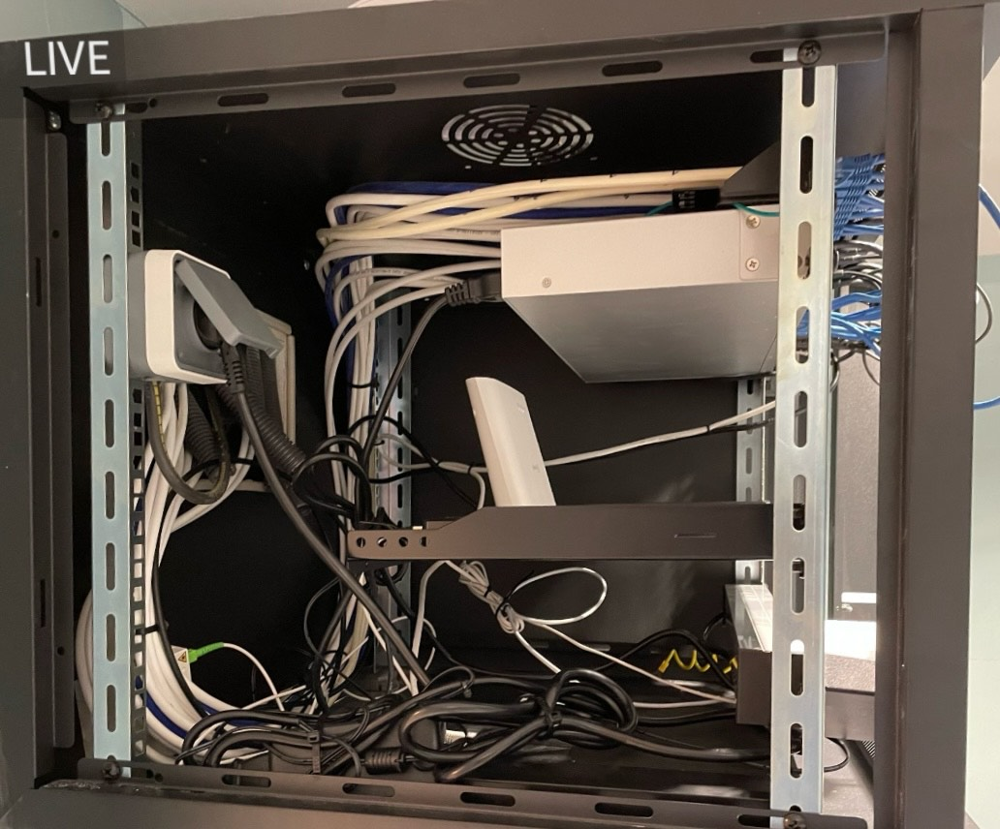

Exemple d'un de mes projets professionnels
Voici une simple présentation de ma première mission de A à Z en autonomie.

Baie de réseau d'une entreprise d'une vingtaine d'employés, avant intervention
Cette photo montre l'état initial de la baie avant intervention. La mission consistait à remplacer le switch manageable et le routeur, retirer les équipements inutiles, reconfigurer l'ensemble et organiser le câblage.

Baie informatique après intervention
Cette photo de face montre le remplacement du matériel et l'organisation du câblage pour une meilleure maintenance.

Organisation du câblage
Photo de profil montrant la réorganisation complète du câblage pour une meilleure accessibilité et gestion future.

Déploiement des bornes WiFi hautes performances
J'ai installé et configuré plusieurs bornes WiFi en optimisant la couverture sur les quatre étages du bâtiment.